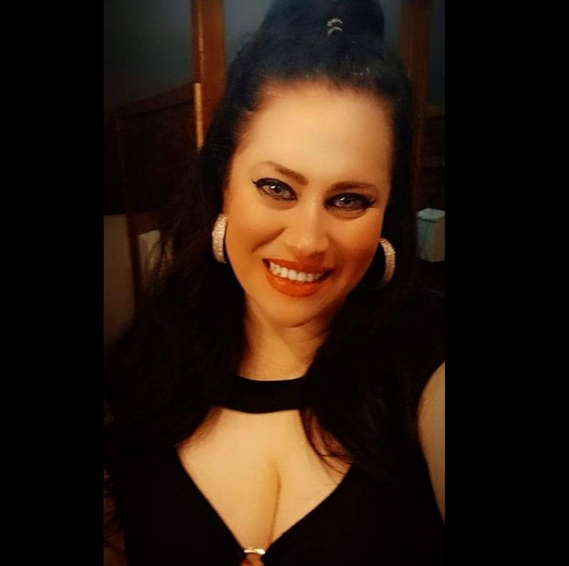

Mechanical Engineer | Aerospace Systems | Automation | Sustainable & Space Technologies
Full-time roles where I can contribute mechanical design, structural analysis, test/validation support, and cross-functional execution.
I am Naiqui M. Armendariz, a mechanical engineer focused on aerospace, space systems, and advanced R&D, currently seeking full-time opportunities. I bring hands-on experience in structural analysis (FEA/ANSYS), system integration, and fast prototyping—connecting engineering fundamentals to real hardware outcomes.
My work includes CAD/CAE (SolidWorks, CATIA), thermomechanical design concepts, and mounting system integration—supported by Python automation and hardware interfacing using Arduino/ESP32. I’ve applied these skills across research and industry settings, contributing to design decisions, analysis-driven iteration, and validation support.
I completed an internship with Supernal (Hyundai Motor Group’s eVTOL division), supporting mechanical mounting systems and design integration for future air mobility platforms. I have also contributed to projects spanning microgravity research and award-winning environmental engineering systems, with a focus on reliability, clarity in documentation, and cross-team execution.
I bring a combination of technical depth, hands-on speed, and systems thinking—ready to contribute immediately to mechanical design, structures/stress, test/validation, or integration teams.
At the core of my work lies a deep commitment to humanity, integrity, and service. I believe every engineering solution should elevate people’s lives and honor our planet. My personal compass is guided by:
My vision is a world where technology brings people together, sparks self-awareness, and leaves a positive legacy on Earth and beyond.
Got questions or ideas? I'd love to hear from you!
📨 Write Me